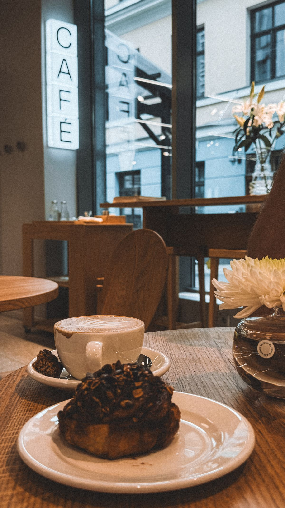
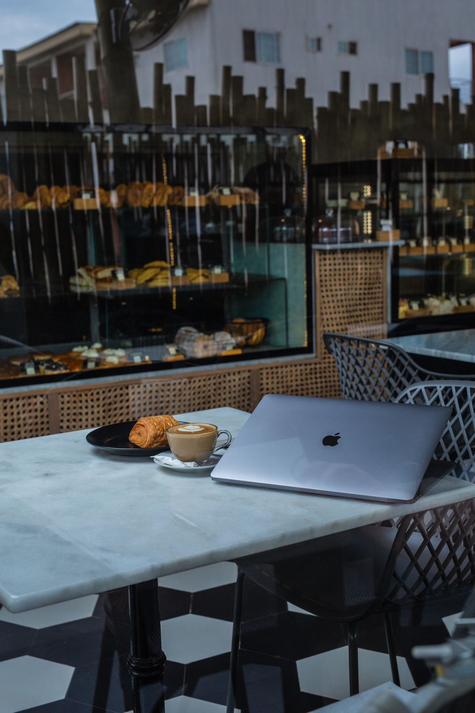
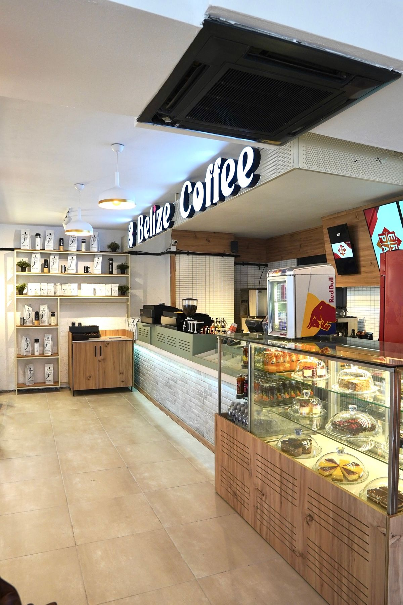
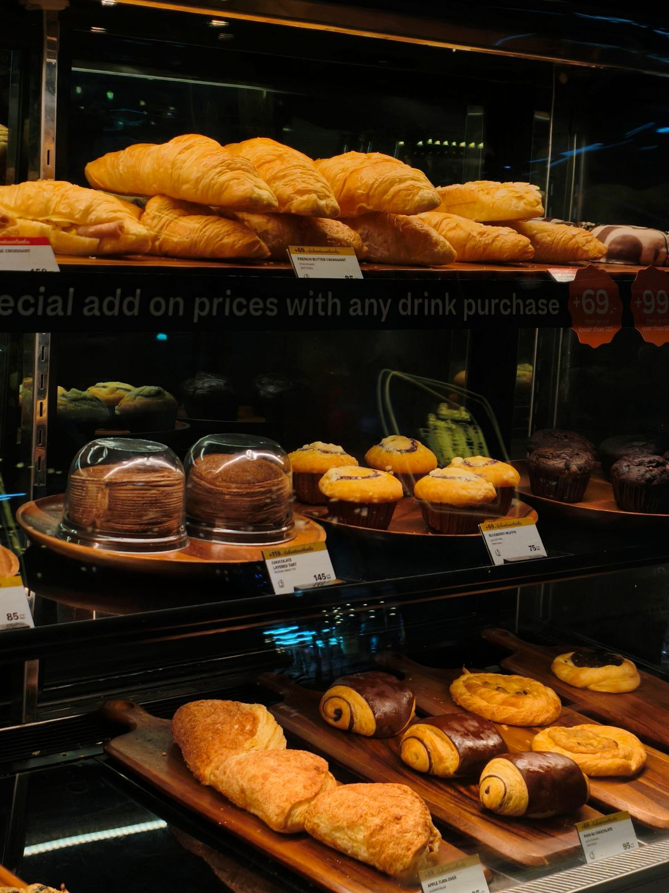

شهرک غرب — بلوار دادمان
تهران، بلوار دادمان، تقاطع درختی
۰۲۱ - ۸۸۵۹۱۰۳۴ رزرو میز در کافهکافه بن پن، کافه و نانوایی شهرک غرب است — نان و شیرینی تازه در کنار قهوه، با فضایی آرام برای چند ساعت کار و مطالعه. میزتان را همین حالا آنلاین رزرو کنید.

کافه بن پن در بلوار دادمان، تقاطع درختی است؛ هر روز از ۸ صبح تا ۱۲ شب میزبان شماست.
تهران، بلوار دادمان، تقاطع درختی
۰۲۱ - ۸۸۵۹۱۰۳۴ رزرو میز در کافهاز صبح زود برای یک صبحانه آرام تا شب برای چند ساعت کار و مطالعه؛ بن پن هر روز هفته باز است.
@bonpain.ir رزرو میزدر بن پن، نان تازه و قهوه کنار هماند؛ از صبحانه تا یک عصر کاری، همهچیز در همین کافه است.

نانوایی بن پن، نان و شیرینی تازه دارد؛ بوی نان تازه، از همان لحظه ورود به کافه حس میشود.

قهوه در کنار نان تازه؛ یک فنجان قهوه و یک شیرینی، برای شروع روز یا یک استراحت کوتاه.

بن پن برای کار و مطالعه مناسب است؛ میزهای آرام کافه، جای خوبی برای چند ساعت تمرکز با یک فنجان قهوه است.

ویترین شیرینی و دسر بن پن، کنار قهوه کامل میشود؛ برای یک عصر شیرین در شهرک غرب.

بن پن یک کافه-نانوایی است؛ یعنی نان تازه و قهوه در یک جا، با فضایی آرام که برای کار، مطالعه و دورهمی ساخته شده — در بلوار دادمان، شهرک غرب.
نانوایی کافه، نان و شیرینی تازه دارد؛ قهوهتان را کنار نان تازه بخورید.
میزهای کافه برای چند ساعت کار و مطالعه مناسباند؛ لپتاپتان را بیاورید و بنشینید.
از صبح زود تا نیمهشب باز است؛ برای صبحانه، کار روزانه یا یک عصر آرام.
فرم همین صفحه را پر کنید؛ روز و ساعت و تعداد نفرات را مشخص کنید و ما رزروتان را تأیید میکنیم.
ویترین نان تازه، فنجان قهوه و میزهایی برای کار و گفتوگو.



در فرم رزرو، روز و بازه زمانی و تعداد نفرات را مشخص کنید.
برای تأیید روز و ساعت رزرو، با شمارهای که ثبت کردهاید تماس میگیریم.
به کافه بن پن در بلوار دادمان بیایید؛ میزتان آماده است و قهوهتان تازه.
تهران، شهرک غرب، بلوار دادمان، تقاطع درختی.
هر روز از ۸ صبح تا ۱۲ شب.
بله؛ فضای آرام کافه برای چند ساعت کار و مطالعه مناسب است. در فرم رزرو، هدف حضورتان را «کار و مطالعه» انتخاب کنید تا میز مناسب برایتان کنار گذاشته شود.
بله؛ بن پن یک کافه-نانوایی است و نان و شیرینی تازه در کنار قهوه سرو میشود.
فرم رزرو همین صفحه را پر کنید یا با شماره ۰۲۱۸۸۵۹۱۰۳۴ تماس بگیرید؛ روز و ساعت و تعداد نفرات را مشخص کنید تا رزروتان تأیید شود.
فرم را پر کنید؛ برای تأیید روز و ساعت رزرو با شما تماس میگیریم. اگر ترجیح میدهید مستقیم صحبت کنیم، تماس بگیرید:
۰۲۱ - ۸۸۵۹۱۰۳۴ اینستاگرام: @bonpain.ir